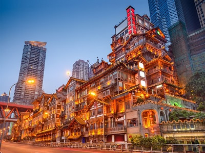

四川逍遙遊
洪崖洞

吊腳樓屬於欄式建築，依山就勢，沿江而建，房屋構架簡單，開間靈活、形無定式，解放碑直達江濱。隨坡就勢的吊腳樓群，形成線性道路空間，吊腳樓的下部架空成虛，上部圍成實體。
以具有巴渝傳統建築特色的“吊腳樓”風貌為主體，通過分層築台、吊腳、錯疊、臨崖等山地建築手法，把餐飲、娛樂、休閒、保健、酒店和特色文化購物等六大業態有機整合在一起，形成了別具一格的“立體式空中步行街”，成為具有層次與質感的城市景區、商業中心。
臥龍自然保護區

位於汶川縣西南部，邛崍山東翼。最高峰為西南的四姑娘山。群山環抱，地勢從西南向東北傾斜，溪流眾多。植被繁多為各類動物提供了棲息場所。
原始森林茂密，有大片熊貓愛吃的箭竹。1980年與世界野生動物基金會合作在臥龍建立中國保護大熊貓研究中心。
1963年建立自然保護區，面積2萬公頃。1983年加入國際“人與生物圈計畫”。主要保護對象是大熊貓等珍稀動物及森林生態系統。
稻城亞丁風景區

主要由“仙乃日、央邁勇、夏諾多吉”三座雪山和周圍的河流、湖泊和高山草甸形成因其獨特的地貌和原生態的自然風光，是攝影愛好者的天堂。
景區內不僅有壯麗的雪山，還有遼闊的草甸、五彩斑斕的森林和碧藍通透的海子，徒步轉山是感受亞丁風光的最好方式。
亞丁，藏語意為“向陽之地”。雪山南北向分布，品字形排列，統稱“念青貢嘎日松貢布”，意為：終年積雪不化的三座護法神山聖地。藏傳佛教中稱其為“三怙主雪山”，是藏民心中的神聖之地。
四姑娘山風景名勝區

四姑娘山被當地藏民崇敬為神仙。相傳為四位美麗善良的姑娘，為了消滅殺害父母和殘害村民的惡魔墨爾多拉，保護人民難得的和平與兇猛的妖魔作英勇鬥爭，最後變成了四座挺拔秀美的山峰。
由於大自然常年的風化剝蝕，使山體十分陡峻，刃脊上多懸崖峭壁。陡岩之下則是綠草茵茵，森林繁茂，谷溪清澈。
地處川西高原區，地殼褶皺隆起、變形，山體抬升，地層變質，岩漿活動，河流下切。這一切內外力的作用，造成了四姑娘山嶺谷高差懸殊的複雜地形特徵。
九寨溝風景名勝區

九寨溝的高峰、彩林、翠海、疊瀑和藏族風情被稱為五絕。以三溝318海最為代表，其中包含有五灘十二瀑，十流數十泉為主景觀。
九寨溝以原始的生態環境，一塵不染的清新空氣和雪山、森林、湖泊组合成神妙、奇幻、幽美的自然風光，呈現自然的美，美的自然。
九寨溝的水更是九寨溝的靈魂，因清純潔淨、晶瑩剔透故有九寨溝歸來不看水之說。除外，九寨溝的動植物資源也非常豐富，原始森林遍布，棲息着大熊猫等珍貴野生動物。